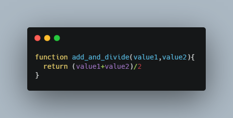

Some valuable lessons on core JS concepts
JavaScript and its relationship to HTML and CSS
JavaScript adds interactive functionality to html and CSS. It allows users to manipulate what is displayed in CSS and the data and text stored in html. This is called manipulating the DOM
Control flow and loops, arrays and objects
Control flow
This determines the order in which your code is read. For example if you call a variable by saying money_in_bank = our_money before you have made a variable by making an equation like my_money = your_money + mymoney then this will throw an error because the order you call the functions is very important and you must make a function called ‘our_money’ before you can use it. The code is always read by the computer from the top of the page to the bottom. Arrays Arrays are simply a list of items. Each item has an index number and ‘knows to come to you’ when you call it by its index number. They look like the following array = [bob, bill, jill , jack, ..ect] The first entry in the list is given the index number 0 and the second item is given 1 and so on. So, in this case bob will have the index number of ‘0’ and bill will have the index number of ‘1’. You can ‘bob’ out of the array by using the command array[0] (this will equal ‘bob’) and you can call out bill by using bill[1]. The item in the array doesn’t have to be a ‘text’, it can be a variable or a value a number of other things.
Arrays
Arrays are simply a list of items. Each item has an index number and ‘knows to come to you’ when you call it by its index number. They look like the following array = [bob, bill, jill , jack, ..ect] The first entry in the list is given the index number 0 and the second item is given 1 and so on. So, in this case bob will have the index number of ‘0’ and bill will have the index number of ‘1’. You can ‘bob’ out of the array by using the command array[0] (this will equal ‘bob’) and you can call out bill by using bill[1]. The item in the array doesn’t have to be a ‘text’, it can be a variable or a value a number of other things.
Loops
Loops allow you to iterate a set number of times or over the length of an array. This is useful because it saves time from coding changes for each individual part. Pretend that the answer to life is 42 but you didn’t know that. Now someone asks you to find the to life which is a whole number. How would you find it? One way is to use a for loop. Let me demonstrate.

The First part ‘let I = 0’ starts of the iterator at 0. The second ‘i = answer_to_life’ tells the for loop to keep going until ‘I’ equals the same as the variable ‘answer_to_life’. When that condition is meet the for loop will stop. The ‘i++ part just tell the for loop to increase the value of I by one each time the loop goes around. In this case ‘i’ starts at 0 it checks if 0 is the equal to the answer_to_life. Since it is not then the loop keeps going and the lines below the initial lines can happen. In this case the my_answer variable is set to the value of ‘I’ (0). Then I increases from zero to one and the loop goes again until i = answer_to_life (so 42 times 😊)
Functions and why they are useful
Functions are like mini little programs that you make that perform a task and you can use in your following code. For example, you can make a function which adds two number together and divides those numbers by 2. That way if you find you need to do that particular operation multiple times you can just call the function instead of having to manually type out or copy your previous code. This can make your code allot shorter. You can make a function and even if you forget how you made that function later it can still be called on for perform that task again.
The DOM and DevTools
The Dom (Document Object Model) is a treelike structure that is used to represent your code. It breaks down HTML into its parent and child elements with the children and grandchildren being lower on the tree structure. This allows easy access and intuitive understanding of code and allows anyone to follow a logical path to navigate the code on your website.

Dev Tools is the DOM that is provided by most browsers. It allows you to do things like select elements in the webpage by clicking on it and viewing the HTML, CSS and JavaScript that is used In that div. You can also do things like check a visual representation of the margin and padding of divs in the webpage and change them (manipulate the DOM) and watch the results immediately appear on the website. This is very useful for debugging and to fine tune your website in a more intuitive way. It can be accessed in any webpage by pressing F12.